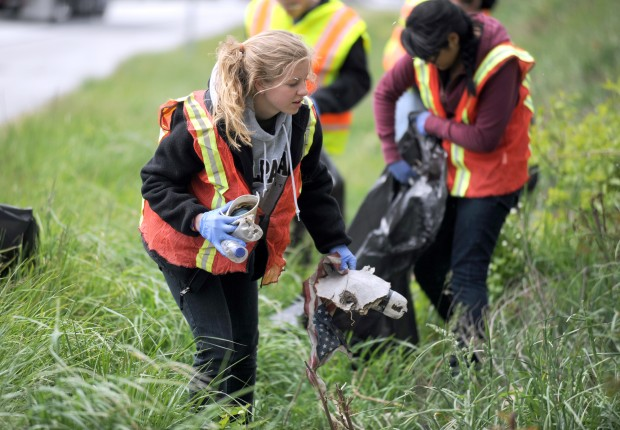

You might think, “How does recycling help the animals?” but it really does, mainly the sea animals. Plastic is not edible, not only sea animals, but land animals also accidently eat plastics and die. Many animals die because of accidentally eating plastics. Animals are not as smart as humans, that is why we need to care for them. 12.7 million tons of plastics are thrown into the ocean.

HOW TO HELP ANIMALS
We should really pick up trash because think about this, we eat fish that eat plastics, do you want to eat plastics? I wouldn’t want to. It is really how you can help the fish and help yourself, you can recycle and pick up trash in the street you see. It not only benefits yourself, it also makes the environment we are living beautiful. Without trash, Earth can be a beautiful planet.
